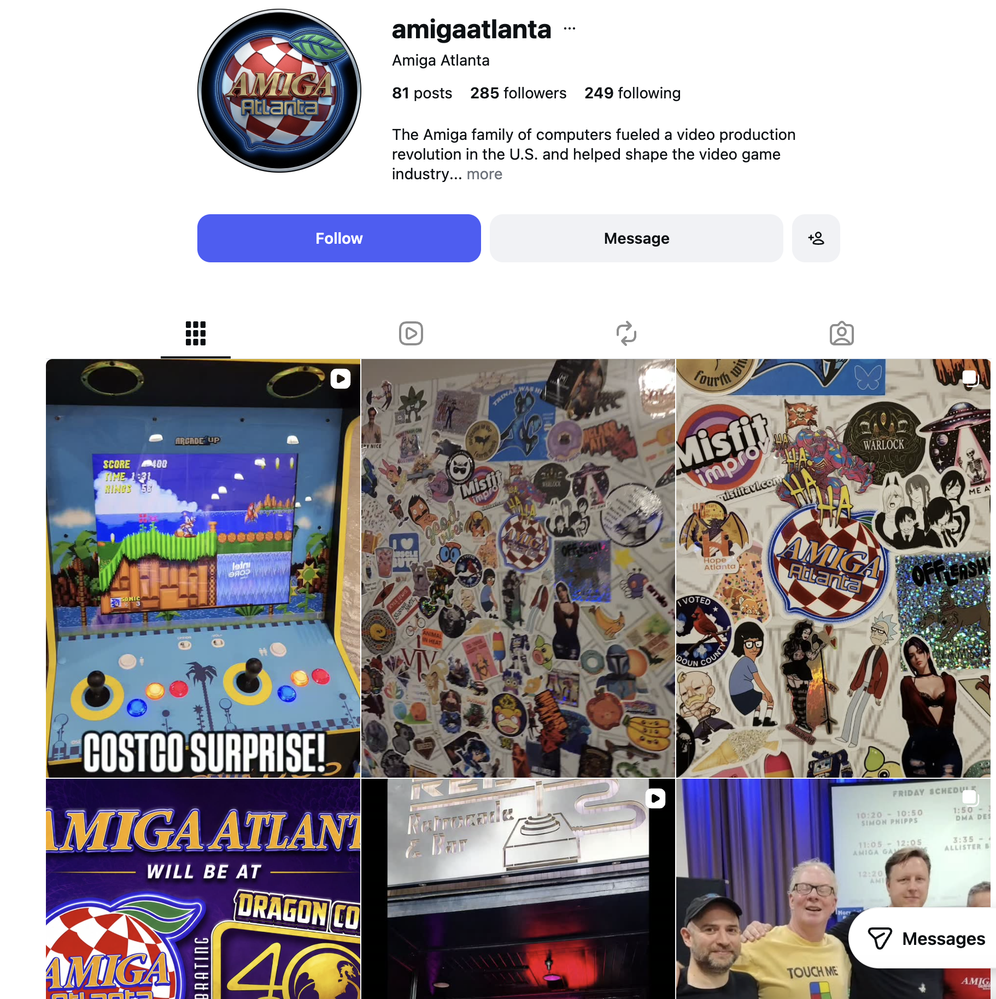

Built around sharing.
From its newsletter, The Workbench, to gatherings of users and developers, Amiga Atlanta has a history of sharing ideas and celebrating creative computing.
Retro computing. Atlanta spirit.
Atlanta’s home for Amiga curiosity. Discover classic computers, creative experiments, and the people keeping the Amiga spirit alive.

Atlanta roots. A new chapter.
Founded in 1986, Amiga Atlanta brought enthusiasts together across metro Atlanta and northern Georgia. Today, the revived group connects that history with a new generation of curious minds.
From its newsletter, The Workbench, to gatherings of users and developers, Amiga Atlanta has a history of sharing ideas and celebrating creative computing.
Led by technologist and computing historian Adam Spring, the revived community brings classic hardware, music, games, and people back together.
Longtime Amiga user? Retro gaming fan? Artist, musician, or hardware tinkerer? There’s a new connection to discover, whatever brought you here.
Ahead of its time
The Amiga brought graphics, sound, and multitasking together in a home computer. Its influence reached from the games we played to the videos we watched.
Colorful graphics and distinctive sound made the Amiga a memorable home for games, giving players and developers a platform to explore.
Digital art, animation, and music found a creative home on the Amiga. It invited people to make things as well as use them.
Amiga systems helped bring video production within reach of a wider audience, leaving their mark on the history of desktop multimedia.
Introduced in New York in 1985, the Amiga 1000 combined advanced audio and graphics with multitasking. At its launch, Andy Warhol demonstrated the computer’s artistic possibilities with a digital portrait of Debbie Harry.
That spirit of experimentation still makes Amiga history worth exploring.
Explore the launch story at the Computer History MuseumFrom the community archive
November 15, 2025 · Stone Mountain, Georgia
The community celebrated four decades of Amiga at Outrun Brewing Company with classic hardware, retro gaming, and live DJ sets on Amiga computers.
Looking for the next gathering? Follow @amigaatlanta for event announcements.
Keep the creativity alive
From retro gaming to Amiga memories, follow along with Amiga Atlanta. Find photos, community moments, and updates on Instagram.